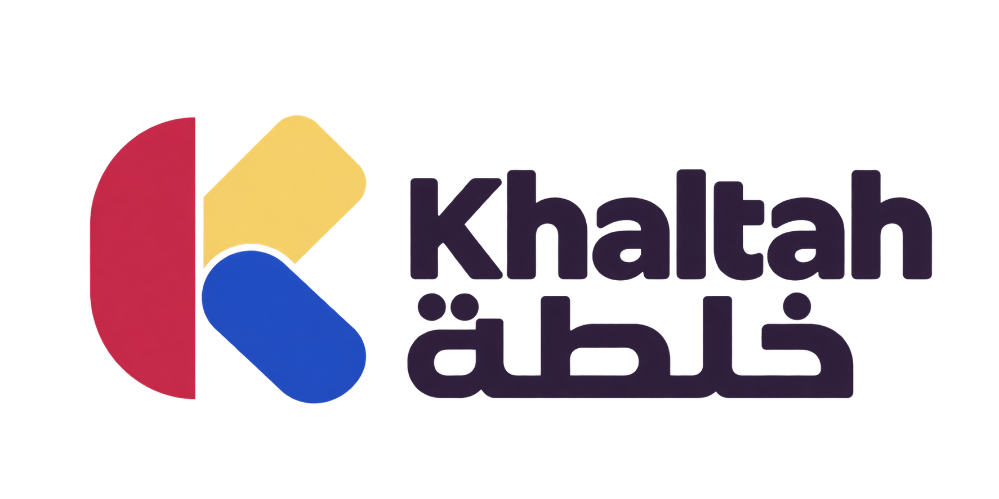

A clear way forwardMix the disciplines the idea actually needs
Khaltah is a proposed venture studio designed for brands and makers seeking a product that cannot come from one discipline alone. Its central idea is a controlled blend of disciplines that rarely meet. From that position, it would build experiences, games, and technology products blending narrative, design, software, and culture. The working method begins with the real context and the outcome a user or team needs, then proceeds by selecting ingredients around one idea and tuning their proportions until the result feels surprising and coherent. Ideas move into tangible form before more complexity is added. Over time, Khaltah could grow into a creative technology studio known for considered combinations that produce work with a clear character.
نركّب فرقًا وأفكارًا مختلفة لإنتاج شيء لا يأتي من تخصص واحد.